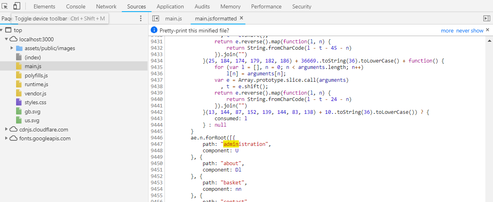

CTF OWASP Top 10 — ~100 défis
Cybersécurité · MTB111 by Creative · 03/2025 → 06/2025
Capture The Flag basé sur le Top 10 OWASP via OWASP Juice Shop, une application e-commerce volontairement vulnérable développée par OWASP à des fins pédagogiques. ~100 défis couvrant les principales catégories de vulnérabilités web : injections SQL, XSS, broken authentication, contrôle d'accès défaillant, CSRF, sensitive data exposure, mauvaises configurations de sécurité.
Format
CTF
Plateforme
OWASP Juice Shop
Défis
~100
Période
03/2025 → 06/2025
Burp Suite
OWASP Juice Shop
Terminal
Navigateur

Catégories couvertes
Top 10 OWASP — vulnérabilités abordées
- A01 — Broken Access Control (IDOR, manipulation de JWT)
- A02 — Cryptographic Failures (exposition de données, tokens prévisibles)
- A03 — Injection (injections SQL sur formulaires et recherche)
- A05 — Security Misconfiguration (endpoints exposés, headers manquants)
- A07 — XSS (réfléchi et persistant)
- A08 — CSRF (absence de jeton anti-CSRF)
Méthodologie
Approche et outils utilisés
- Burp Suite — interception et modification des requêtes HTTP/S, fuzzing
- DevTools navigateur — analyse du code source, cookies, tokens et appels réseau
- Terminal — commandes curl, manipulation de JWT, décodage base64
- Analyse des réponses API — endpoints non documentés, messages d'erreur
Liens avec le tableau de synthèse E4
B1.1
Gérer le patrimoine informatique
- Application du référentiel OWASP Top 10 pour identifier et qualifier les vulnérabilités rencontrées.
B1.6
Organiser son développement professionnel
- ~100 défis résolus en autonomie, renforçant la maîtrise des outils de sécurité offensive (Burp Suite).